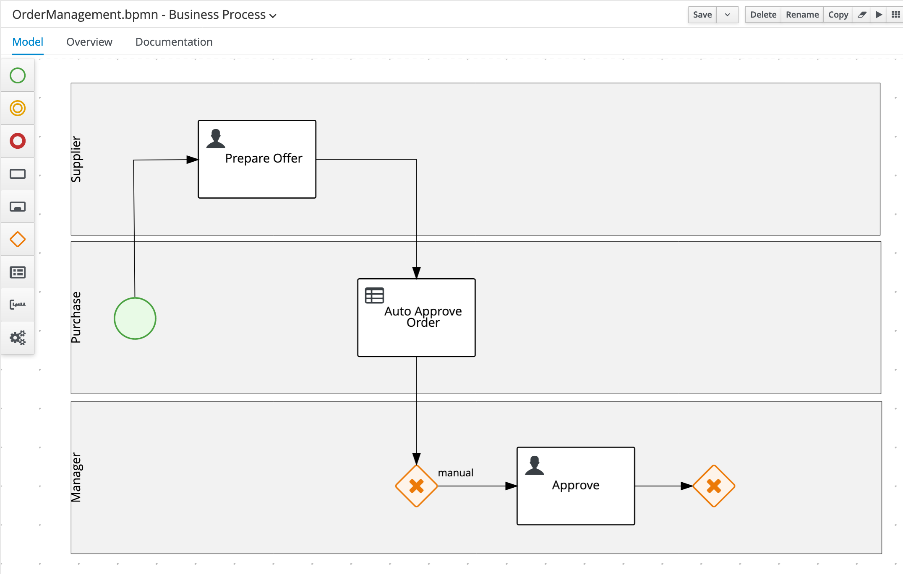
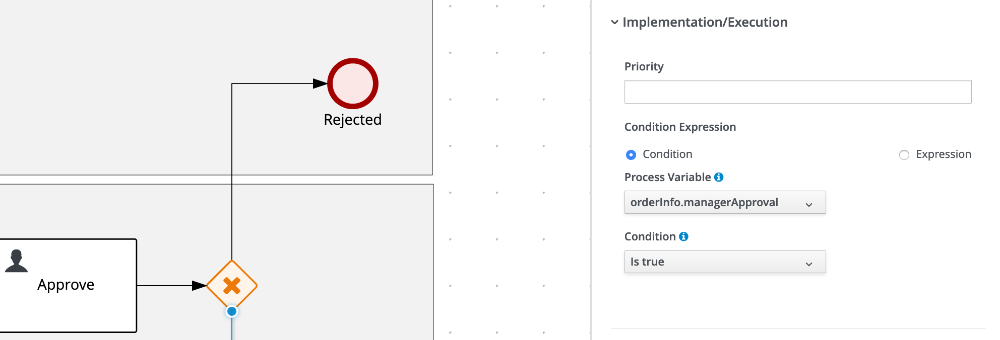

18. Lab Walk Through
18.1 Create a Project
To define and deploy a business process, we first need to create a new project in which we can store the BPMN2 model, our domain model and the forms required for user interaction. To create a new project:
- Navigate to Business Central
- Login to the platform with the provided username and password.
-
Click on Design to navigate to the Design perspective.
-
In the Design perspective, create a new project. If your space is empty, this can be done by clicking on the blue Add Project button in the center of the page. If you already have projects in your space, you can click on the blue Add Project icon at the top right of the page.
-
Give the project the name
order-management, and the description "Order Management".
With the project created, we can now start building our solution.
18.2 Lab Walk through
In this section we will first create the Domain Model within Business Central and then walk through the creation of the assets associated with the Process.
18.2.1 The Domain Model
The business process will collect and carry data through the execution of the process. This data is stored in a data model or domain model. In this lab, we collect two types of data:
OrderInfo: contains information about the order, like the item and the price.SupplierInfo: contains information about the supplier, like the name and the expected delivery date.
-
In your project, click on the Add Asset button in the middle of the screen.
-
In the drop-down menu in the upper-left corner, select
Model. Click on the Data Object tile. -
Give the Data Object the name
OrderInfo. Leave the package set to default. -
Add the following fields to the
OrderInfodata object:Identifier Label Type item item name String urgency urgency String targetPrice target price double managerApproval approved Boolean -
When you’ve added the fields, save the data object by clicking on the Save button in the top menu.
- Use the _breadcrumb` navigator at the top-left of the screen to navigate back to our
order-managementproject. - Click on the blue Add Asset button in the top-right corner and create a new Data Object
-
Give it the name
SupplierInfo -
Give the
SupplierInfoobject the following fields:Identifier Label Type offer best offer double deliveryDate delivery date Date user user String -
We’re done creating our data model.
We can now start with our process design.
18.3 Process Design
With the domain model defined, we can now sketch out the main flow of the process, the actors, the user task nodes and the required automation decisions.
-
Create a new
Business Processasset. Name itOrderManagement. You can do this by clickingAdd an Assetand then selectingBusiness Processand then setting the name asOrderManagement. -
When the process designer opens, scroll down in the property panel on the right side of the screen, until you see the section Process Data.
-
Expand the Process Data section and add the following 3 Process Variables by clicking on the + sign.
Name Data Type orderInfo OrderInfo supplierInfo SupplierInfo approved Boolean 
18.3.1 Prepare Offer
-
In the palette on the left-side of the editor, select the
Lanecomponent: -
Create the following 3 swimlanes: Supplier , Purchase , Manager
-
Create the Start Event node in the
Purchaseswimlane. -
Create the
Prepare OfferUser Task node in theSupplierswimlane and connect it to the Start Event node. Set the following properties on the node via the properties panel on the right side of the screen:- Task Name:
PrepareOffer - Subject:
Prepare Offer for #{orderInfo.item} - Actors:
#{supplierInfo.user} - Input:
Data Inputs and Assignments Name
Data Type
Source
orderInfo
OrderInfo
orderInfo
supplierInfo
SupplierInfo
supplierInfo
- Output
Data Outputs and Assignments Name
Data Type
Source
supplierInfo
SupplierInfo
supplierInfo
- Task Name:
-
Create the
Auto Approve OrderBusiness Rule node in thePurchaseswimlane and connect it to thePrepare Offernode. Set the following properties: - Rule language:
DMN - Assigments:
Name |
Data Type |
Source |
Order Information |
OrderInfo |
orderInfo |
Supplier Information |
SupplierInfo |
supplierInfo |
Name |
Data Type |
Target |
Approve |
Boolean |
approved |

📘 INFO: After we've created our DMN Decision Model, we will revisit the configuration of this node to reference this DMN model via its
nameandnamespaceproperties.
18.3.2 Exclusive Gateway
-
Create an X-OR Gateway/Exclusive Gateway in the
Managerswimlane, below theAuto Approve Ordernode and connect it to that node. -
Create the
ApproveUser Task in theManagerswimlane and connect it to the X-OR gateway. Set the following properties:- Task Name:
Approve - Subject:
Approve Order of #{orderInfo.item} - group:
rest-all - Assignments:
Data Inputs and Assignments Name
Data Type
Source
orderInfo
OrderInfo
orderInfo
supplierInfo
SupplierInfo
supplierInfo
Data Outputs and Assignments Name
Data Type
Target
orderInfo
OrderInfo
orderInfo
- Task Name:
-
Create an X-OR Gateway/Exclusive Gateway in the
Managerswimlane, after theApprovenode and connect it to that node.
-
Create another X-OR Gateway/Exclusive Gateway under the
Managerswimlane (so outside of the swimlane) and connect it to the two other X-OR Gateways/Exclusive Gateways as shown in image below: -
Create the
Place Order in ERPScript Task under theManagerswimlane (so outside of the swimlanes) and connect it to the X-OR Gateway we created earlier. Set the following script in the node’s properties properties: -
Create an End Event node under the
Managerswimlane (so outside of the swimlanes) and connect it to thePlace Order in ERPnode. Name itApproved. -
Create an End Event node in the
Purchaseswimlane and connect it to the X-OR Gateway. Name itRejected. -
On the Sequence Flow from the X/OR Gateway before the
Approvenode that is connnected ot the other X/OR Gateway, set the following condition, which tells the process engine that this path should be taken when the order is not automatically approved:- Process Variable:
approved - Condition:
Is true
- Process Variable:
-
On the Gateway before the
Approve node, set the Default Route property toApprove. -
On the Sequence Flow from the X/OR Gateway after the
Approvetask, which is connected to the X/OR Gateway before thePlace Order in ERPtask, set the following condition:- Process Variable:
orderInfo.managerApproval - Condition:
Is true

- Process Variable:
-
On the X/OR Gateway after the
Approvalnode , set the Default Route toRejected. -
Save the process definition.
With the overall layout of the process definition complete, the routing logic implemented, and the I/O assignments defined, we can now implement the business rules of our automated approval decision.
18.4 Business Rules and Decisions
Our Order Management process contains a Business Rule Task, but we have not yet defined the Decision Model that will be used in the task. In this paragraph we will implement the automatic approval rules in the form of a DMN model.
18.4.1 Creating the DMN Inputs and BKM
-
In the main project page, the so called library view, click on the Add Asset button.
-
In the next screen, set the drop-down filter to Decision. Select the DMN asset. Give it the name
order-approval. -
In the DMN editor, open the property-panel on the right-side of the screen and set the Namespace property to:
http://www.redhat.com/dmn/demo/order-management-dmn. First we need to import our data-model, so we can use it in our DMN decisions. In the DMN editor, click on the Data Types tab and click on the Import Data Object button at the right-hand side of the screen: -
Select both the
OrderInfoandSupplierInfoobjects and click on the Import button:![dmn-import-data-objects-select.png[]](../../99_images/business_automation/order_management/dmn-import-data-objects-select.png%5B%5D.png)
​ With the 2 datatypes imported, we need to create a third type that will hold the possible values for the urgency field of our Order Information. Click on the blue Add button in the top-right corner.
-
In the entry that opens, give the data type the Name
Urgencyand the Typestring: -
Click on the Add Constraints button, select
Enumerationas the constraint type, and set the values lowandhigh`. -
Click on the blue checkmark button to save the type.
-
Navigate back to the model via the Model tab. Add 2
Inputnodes to the model and name themOrder InformationandSupplier Information -
Select the
Order Informationnode. Open the properties panel on the right-hand side of the screen, and set the Data type toOrderInfo.
-
Do the same for the
Supplier Informationnode. Set the Data type toSupplierInfo. Create a newBusiness Knowledge Modelnode, name itPrice Tolerance. -
Click on the node, and click on the Edit button to start editting the node:
-
Click in the Edit parameters. An editor will open. Click on Add parameter. Name the parameter
order informationand set the type toOrderInfo. -
Right click in the empty white cell under the parameter definitions and select Clear. The text Select expression will appear in the cell. Click on the cell and select
Decision Table. -
Add an input clause to the decision table. The name of the input clause is
order information.urgency, which references theurgencyattribute of theorder informationparameter. Set the type toUrgency, which references theUrgencyenumeration we created earlier. -
Set the output clause data type to
number. Leave the name empty. -
Click on the
Price Tolerancecell (top cell of the table), and set the data type tonumber.
-
Implement the rest of the decision table as shown below. And save the DMN model.
18.4.2 Writing the DMN Decision
In this section we will complete the writing of the DMN decision.
-
Navigate back to the model by clicking on the Back to order-approval link at the top-left of the editor. Create a new Decision Node and name it
Approve. Connect the 2 input nodes and outPrice Tolerancebusines knowledge model node to the new decision node. -
Select the
Approvedecision node and click on the edit button. -
Click on _Select Expression, and set the logic type to
Literal Expression. -
Enter the following expression:
Supplier Information.offer < Price Tolerance(Order Information) * Order Information.targetPrice -
Click on the
Approvecell (top cell of the table), and set the data type toboolean.
18.5 Connecting the Decision to the Process
- Navigate back to the model by clicking on the Back to order-approval link at the top-left of the editor.
- Our DMN model is now complete. Make sure to save your model.
- With our DMN model implemented, we can now revisit our Business Rules Task in our BPMN2 model. Open the
order-managementprocess definition and click on theAuto Approval Ordernode. - Open the node’s properties in the property-panel on the right side of the editor, open the
Implementation/Execution section and set:
- Namespace:
http://www.redhat.com/dmn/lab/order-approval-dmn - Name:
order-approval
- Namespace:
- In the same properties panel, expand the Data Assignments section and open the Assignments editor
-
Implement the following data input and output assignments.
-
Our BPMN model is now complete. Make sure to save the model.
Now, we should be able to create and implement our forms.
18.6 Creating Forms
In this section we are going to create the process start and user-task forms. We could simply generate these forms with the click of a button, which gives us some standard forms based on the process and task data.
In this lab however, we will be creating these forms using the Form Modeler tool. This allows us to design these forms to our specific needs.
18.6.1 Process Start Form
Let’s start with the process start form. We want to create the following form:
-
In the project’s library view, click on Add Asset. Filter on Form, click on the Form tile. Enter the details as shown in the screenshot below:
-
On this form we want to specify the initial order. We therefore require fields from the
orderInfoandsupplierInfoprocess variable. When we expand theModel Fieldssection, we can see our 2 process variables (orderInfoandsupplierInfo). These are both complex objects. To work with complex objects (as opposed to simple types like integers and booleans), we require a data-form for that specific object. We therefore first need to create a data-form for ourOrderInfoandSupplierInfoobjects. -
Go back to the project’s library view, click again on Add Asset and create a new form. Use the following details:
-
Using the Form Modeler constructs, create the following form:
-
To create this form, drag both the
item,urgencyandtargetPriceonto the canvas and configure them as follows. -
List Box:
-
Radio Group:

-
Decimal Box:
-
Save the form and create another new form for our
supplierInfo. Use the following details..
-
Using the Form Modeler constructs, create the following form:
-
To create this form, drag the
userfield onto the canvas and configure it as follows. -
Save the form and open the
OrderManagementform (the first form we created). -
Drag the
orderInfoprocess variable onto the canvas. In the pop-up form, set theOrderManagement-Orderform we just created as the Nested Form: -
Drag the
supplierInfoprocess variable ontoo the canvas. In the pop-up form, set theOrderManagement-SupplierInfoform we just created as the Nested Form:
18.6.2 Prepare Offer Form
Next, we will create the form for the Prepare Offer User Task.
-
Create a new form. Provide the following details:
-
Our aim is to create a form that looks as such:
-
As with the process start form, this user-task form operates on 2 variables,
orderInfoandsupplierInfo. And, as with the process start form, we need to create a data-object form for each of these variables. Technically, data-object forms for a certain data-object can be reused in multiple task-forms. However, creating a data-object form per task-form allows us to design these data-object forms aimed for that specific task.
PrepareOffer-OrderInfo
PrepareOffer-SupplierInfo
Finally, we need to create the task form for the Approve task.
-
Create a new form. Provide the following details.
.
-
Our aim is create a form that looks like this:
-
As with the other forms, this user-task form operates on 2 variables,
orderInfo,supplierInfo. And, as with the other forms, we need to create a data-object form for each of these variables.
Approve-SupplierInfo 
Approve-OrderInfo
Don’t forget to save all your forms!!!
The implementation of our process is complete. It’s now time to deploy and test our application.
18.7 Deploying the Process Service
With our Order Management project’s process, decisions and forms completed, we can now package our project in a Deployment Unit (KJAR) and deploy it on the Execution Server. To do this:
-
Go back to our project’s Library View (for example by clicking on the
Order Managementlink in the breadcrumb navigation in the upper-left of the screen). -
Click on the Deploy button in the upper-right corner of the screen. This will package our project in a Deployment Unit (KJAR) and deploy it onto the Execution Server (KIE-Server).
-
Go to the Execution Servers perspective by clicking on "Menu → Deploy → Execution Servers". You will see the Deployment Unit deployed on the Execution Server.
18.8 Execute the process
In this section, you will execute the process deployed on the Process Execution Server via the Business Central workbench.
-
Navigate to Menu → Manage → Process Definitions. If everything is correct, the
order-managementprocess will be listed. Click on the kebab icon of theorder-managementprocess and click on Start. -
In the form that opens, pick the Huawei P10 Phone as the item and set the urgency to low. Set the target price to 700 and set the supplier name to the name of your own Business Central user (e.g.
bamAmdmin). Click on Submit. -
In the process instance details screen that opens, click on the Diagram tab to open the process instance diagram, which shows the current state of the process.
-
The process is in a wait state at the
Prepare Offertask. Navigateto Menu → Track Task Inbox**. Click on thePrepare Offertask to open its task window. -
Click on the Start button to start working on the task. Because the task has been assigned to a single user (via #{supplierInfo.user}), you don’t have to first claim the task.
-
Select a random delivery date. Set the best offer to 900. Click on Complete.
-
The process will continue to the
Auto Approve Orderdecision node. Because of the target prices set, and the offered price, the decision will evaluale tofalse. Hence, the process will continue to theApprovetask. -
Go back to the Task Inbox and open the
Approvetask. Click on Claim and on Start. In this form we can approve or disapprove the order via the approved checkbox, and specify a rejection reason if we reject the order. Approve the task by checking the approved checkbox and clicking on Complete: -
Go back to the process instance view and observe that the process instance is gone.
-
Enable the Completed checkbox in the State filter on the left-hand-side of the screen. Observe that we can see our process instance in the list.
-
Open the process instance, open it’s Diagram tab. Observe that the order has been accepted:
Run a couple more process instances with different values to test, for example, the functionality of the Automated Approval Rules.
18.9 Correcting problems and errors
During process instance execution, a lot of things can go wrong. Users might fill in incorrect data, remote services are not available, etc. In an ideal world, the process definition takes a lot of these possible problems into account in its design. E.g. the process definition might contain exception handling logic via boundary catching error events and retry-loops. However, there are situations in which an operator or administrator would like to manually change the process to another statem for example, restart an already completed User Task. In the latest version of IBM Business Automation Open Edition 8.0 this is now possible via the Process Instance interface in Business Central.
-
Start a new process instance of our Order Management process.
-
Complete the
Prepare Offertask in such a way that the order is not automatically approved and the process will hit theApproveUser Task wait state. -
Go to the Process Instances view and select the process instance. Navigate to the Diagram tab. Observe that the process is waiting in the
ApproveUser Task. -
Click on the
Prepare Offernode to select it. In the Node Actions panel on the left-hand-side of the screen, verify that thePrepare Offernode is selected and click on Trigger. Observe that thePrepare OfferUser Task has been activated. -
Although we have re-activated the
Prepare Offernode, we have not yet de-activated theApprovetask. Click on the activeApprovetask and expand the Node Instances section in the Node Actions panel. Click on the kebab icon of the activeApproveinstance and click on Cancel:6. Open the Task Inbox. Observe that the
ApproveUser Task is gone and that we have a newPrepare Offertask.- Open the
Prepare Offertask, set the price to a price which will trigger the rules to automatically approve the order, and complete the task. Go to the process instances view and observe that the process instance has been completed. Enable the Completed filter in the State filter panel on the left-hand-side of the screen. Open the completed process instance and open its Diagram tab.
- Open the
18.10 Execute the process via APIs
The Execution Server provides a rich RESTful API that allows user to interact with the process engine and deployed processes via a REST. This powerful feature allows users to create modern user interface and applications in their technology of choice (e.g. Entando DXP, ReactJS/Redux, AngularJS, etc.) and integrate these applications with the process engine to create modern, process driven, enterprise applications.
The Swagger interface provides the description and documentation of the Execution Server’s RESTful API. At the same time, it allows the APIs to be called from the UI. This enables developers and users to quickly test a, in this case, a deployed business process.
-
Navigate to the KIE Server Swagger Page
-
Locate the Process instances section. The Process Instances API provides a vast array of operations to interact with the process engine.
-
Locate the POST operation for the resource
/server/containers/{containerId}/processes/{processId}/instances. This is the RESTful operation with which we can start a new process instance. Expand the operation:
-
Click on the Try it out button.
-
Set the containerId to
order-management(in this case we use the alias of the container). -
Set the processId to
order-management.OrderManagement. -
Set Parameter content type to
application/json.
-
-
Set the Response content type to
application/json. -
Set the body to:
-
Click on the Execute button.
-
If requested, provide the username and password of your Business Central and KIE-Server user (in this example we have been using u:
bamAdmin, p:ibmpam1!).📘 INFO: If you're using the Linux environment on Skytap use the pamadmin:pamadm1n information
-
Inspect the response. Note that the operation returns the process instance id of the started process.
-
Go back to the Business Central workbench. Go the process instances view and inspect the process instance we have just started.
The RESTful API provides many more operations. Let’s use the API to fetch our Task List and complete the Request Offer task.
-
In the Swagger API, navigate to the Process queries section.
-
Find the GET operation for the resource
/server/queries/tasks/instances/pot-owners. Expand the operation and click on the Try it out button. -
Make sure the *Response content type is set to
application/json. Leave all the other fields set to their default values. -
Click on the Execute button. This will return all the tasks for our user (in the case of this example this is the
bamAdminuser). -
We can see the
Prepare Offertask that is available in our inbox. Let’s complete this task. -
Go to the Task Instances section in the Swagger interface and locate the PUT operation of the
/server/containers/{containerId}/tasks/{taskInstanceId}/states/completedresource. This is the operation with which we can complete a task.-
Set the containerId to
order-management. -
Set the taskInstanceId to the id of the task instance you want to complete. The task instance id an be found in the list of task instances we got back from our previous REST operation.
-
Set auto-progress to
true. This controls the auto progression of the taks through the various states of the task lifecycle (i.e. claimed, started, etc.) -
Set the Parameter content type to
application/json. -
Set the Response content type to
application/json. -
Set the body to:
{ "supplierInfo": { "com.myspace.order\_management.SupplierInfo" : { "user": "bamAdmin", "offer": "900", "deliveryDate":"2020-03-11T12:00:00.000Z" } } }📘 INFO: If you're using the Linux environment on Skytap use the following.
{ "supplierInfo": { "com.myspace.order\_management.SupplierInfo" : { "user": "pamadmin", "offer": "900", "deliveryDate":"2020-03-11T12:00:00.000Z" } } }- Click on the Execute button. If you’ve entered everything correctly, the task will be completed and the process will move to the next wait state, the
Prepare Offertask. . Go back to the Business Central workbench. Go to the process instances view. Select the process instance of the task you’ve just completed. Observe that thePrepare Offertask has been completed and that the process is now waiting on theApproveUser Task.
-
The rest of the tasks can be completed in the same way via the API.
18.11 Using the KIE-Server Client
IBM Business Automation Open Edition 8.0 provides a KIE-Server Client API that allows the user to interact with the KIE-Server from a Java client using a higher level API. It abstracts the data marshalling and unmarshalling and the creation and execution of the RESTful commands from the developer, allowing him/her to focus on developing business logic.
In this section we will create a simple Java client for our Order Management process.
-
Create a new Maven Java JAR project in your favourite IDE (e.g. IntelliJ, Eclipse, Visual Studio Code).
-
Add the following dependency to your project:
-
Create a Java package in your
src/main/javafolder with the namecom.myspace.order_management. -
Download the
OrderInfo.javafile from this location and add it to the package you’ve just created. -
Download the SupplierInfo.java file from this location and add it to the package.
-
Create a new Java class called
Main. Add apublic static void main(String[] args)method to your main class. -
Before we implement our method, we first define a number of constants that we will need when implementing our method (note that the values of your constants can be different depending on your environment, model namespace, etc.):
private static final String KIE_SERVER_URL = "http://localhost:8080/kie-server/services/rest/server"; private static final String CONTAINER_ID = "order-management"; private static final String USERNAME = "bamAdmin"; private static final String PASSWORD = "ibmpam1!"; private static final String PROCESS_ID = "order-management.OrderManagement";📘 INFO: If you're using the Linux environment on Skytap use the following.
private static final String KIE_SERVER_URL = "http://localhost:8080/kie-server/services/rest/server"; private static final String CONTAINER_ID = "order-management"; private static final String USERNAME = "pamadmin"; private static final String PASSWORD = "pamadm1n"; private static final String PROCESS_ID = "order-management.OrderManagement"; -
KIE-Server client API classes can mostly be retrieved from the
KieServicesFactoryclass. We first need to create aKieServicesConfigurationinstance that will hold our credentials and defines how we want our client to communicate with the server: -
To allow the KIE-Server Client’s marshaller to marshall and unmarshall instances of our domain model, we need to add our domain model classes to the
KieServicesConfiguration. -
Next, we create the
KieServicesClient:~~~java KieServicesClient kieServicesClient = KieServicesFactory.newKieServicesClient(kieServicesConfig); ~~
-
From this client we retrieve our
ProcessServicesClient: -
We now create a
Mapwhich we will use to pass the process input variables. We create a newOrderInfoinstance andSupplierInfoinstance and put them in theMap.Map<String, Object>inputData = new HashMap<>(); OrderInfo orderInfo = new OrderInfo(); orderInfo.setItem("Huawei P10"); orderInfo.setUrgency("low"); inputData.put("orderInfo", orderInfo); SupplierInfo supplierInfo = new SupplierInfo(); supplierInfo.setUser("bamAdmin"); inputData.put("supplierInfo", supplierInfo);📘 INFO: If you're using the Linux environment on Skytap use pamadmin:pamadm1n as the username password
Map<String, Object>inputData = new HashMap<>(); OrderInfo orderInfo = new OrderInfo(); orderInfo.setItem("Huawei P10"); orderInfo.setUrgency("low"); inputData.put("orderInfo", orderInfo); SupplierInfo supplierInfo = new SupplierInfo(); supplierInfo.setUser("pamadmin"); inputData.put("supplierInfo", supplierInfo); -
We can now start a new process instance via the
ProcessServicesClient. -
Finally, we can print the process instance id to
System.out. -
Compile your project and run it. Observe the output in the console, which should say: New Order Management process instance started with instance-id
The complete project can be found here: https://github.com/timwuthenow/rhpam7-order-management-demo-repo
The KIE-Server Client provides more services to interact with the Execution Server:
-
UserTaskServicesClient: provides functionality to interact with the UserTask services, for example to claim, start and complete a User Task. -
CaseServicesClient: provides functionality to interact with the Case Management features of the Execution Server. -
ProcessAdminServicesClient: provides the administration API for processes. -
etc.
We leave as an exercise to the reader to try to complete a User Task, of the process instance we’ve just created, using the UserTaskServicesClient.